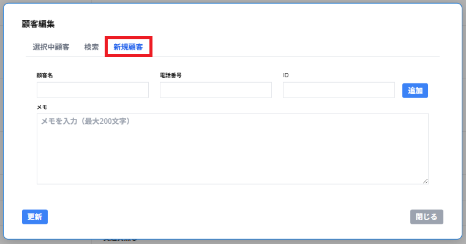

新規顧客のタブを選択する場合、以下の項目が表示されます。
新規の顧客として顧客を登録し、予約・接客の顧客として選択することができます。
・顧客名
顧客の名前(20文字文字以内)を登録することができます。
顧客名を登録しないと、顧客として登録・選択することはできません。
・電話番号
電話番号の文字(11文字以内)を登録することができます。
・ID
IDの文字(100文字以内)を登録することができます。
・メモ
メモ(200文字以内)を入力することができます。
・追加
追加をクリックすると、選択中顧客タブに入力した顧客を追加することができます。
